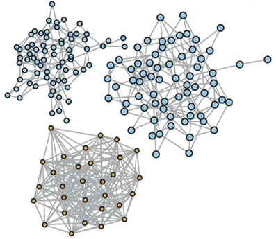
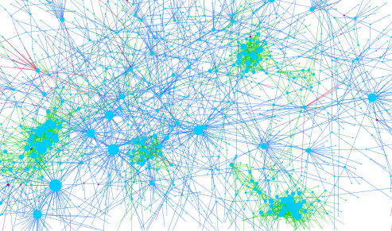
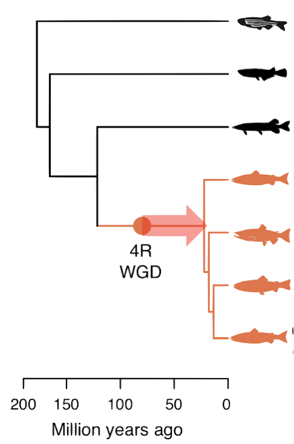

OmniCorr
R-package for visualizing host–microbiota interactions using multi-omics data.
Software and code developed as part of our research.
Maintained by us or our collaborators — click a tool to go to its code or website.

R-package for visualizing host–microbiota interactions using multi-omics data.
R code for Comparative analysis of Plant co-Expression.

R code for Differential Co-Expression network analysis.
Plant Genome Integrated Explorer — genomics tools including co-expression network analysis (Street Lab).

R code for the Expression Variance and Evolution model (Sandve Lab).
Rough Set Toolkit for Analysis of data (Komorowski lab).
Older tools kept here for reference.
Salmonid Motif DataBase.
Tools for exploring gene regulation in the cyanobacterium Synechocystis.
Residue–residue contact prediction.
High-spatial-resolution transcriptomics profiles in aspen and Norway spruce — data in PlantGenIE.